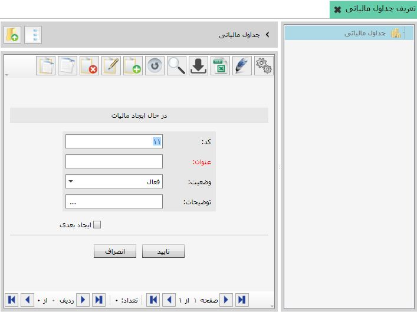
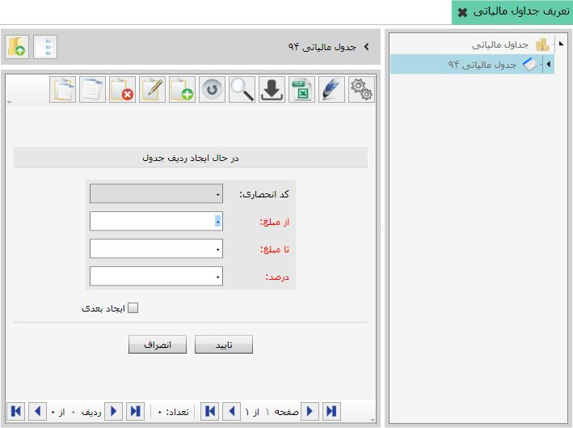

گفتیم که می توانید جداول مالیات بر درآمد برای حقوق کارکنان تعریف کنید. برای این کار روی منوی «تعریف جداول مالیاتی» از بخش «کاربردهای ویژه» کلیک کنید تا صفحه مربوطه باز شود:

شکل بالا صفحه «تعریف جداول مالیاتی» را نمایش می دهد که هیچ جدولی برای آن تعریف نشده است. برای تعریف جدول مالیاتی، در جدول شکل بالا روی گزینه اضافه کلیک کنید، فرم ایجاد مالیات باز می شود:
همانند سایر فرم هایی که قبلا توضیح داده شد، کد جدول مورد نظرتان را وارد کنید یا کد پیشنهادی از سوی نرم افزار را تایید نمایید. عنوانی برای جدول مالیاتی انتخاب نمایید(برای مثال جدول مالیات بر درآمد سال 92)، فیلد وضعیت را در حالت فعال قرار داده و پس از درج توضیحات مورد نیاز فرم را تایید نمایید. حال جدول ایجاد شده در لیست جداول مالیاتی نمایش داده می شود.
می توانید برای جدول مالیاتی که ایجاد کرده اید، ردیف هایی را تعریف کنید. برای این کار از نمودار درختی سمت راست نام جدول مالیاتی تعریف شده را انتخاب کنید یا از جدول سمت چپ روی نام جدول ایجادی دبل کلیک نمایید تا فرم ایجاد ردیف جدول نمایان شود:
شکل فوق فرم ایجاد ردیف جدول را نمایش می دهد. ردیف های جدول دارای کد نمی باشند، بنابراین فیلد کد در این فرم غیر فعال است. در این فرم سه فیلد از مبلغ، تا مبلغ و درصد قرار گرفته است، مقادیر این فیلد ها را می توانید بر اساس جداول مالیاتی بخشنامه شده از سوی سازمان امور مالیاتی کشور کامل کنید تا از این پس مالیات بر درآمد کارکنان بر اساس این جدول محاسبه شود.